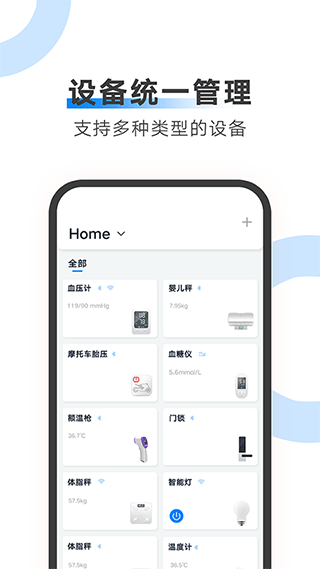

新手实战：把 AiLink 设备从开箱绑定到数据归位完整跑一遍
家里刚买了 AiLink 体脂秤或血压计？跟着这篇教程一步步走，从装 App、绑设备、建家人档案，到处理离线数据和固件升级，一次把整套流程跑通。
读完这篇教程，你能把家里至少一台 AiLink 设备从零到一完整跑通——从第一次绑定、建好家人档案、测完数据归到正确的人名下，到知道离线数据怎么认领、固件怎么安全升级。全程不跳步，跟着做就行。
准备工作：先搞清楚两件事
动手之前先花五分钟确认好这两点，后面少走很多弯路。
第一，你的设备是什么类型。 ailink官网目前支持的健康设备分两种：纯蓝牙款和 BLE+WiFi 款。纯蓝牙的比如智能跳绳，记录数据时手机必须在旁边、蓝牙连着；BLE+WiFi 的比如 WiFi 版体脂秤、血压计，测完数据设备自己就能上传云端，手机不在家也不耽误。开箱时看说明书或设备外壳的标识就能分辨——标了 "WiFi" 的就是后者。
第二，把 AiLink App 装上。 正式版安装包可以从下载拿到，也可以直接走应用商店搜 AiLink，注册一个账号，手机号邮箱都可以。登录后进首页，你会看到设备列表和数据两个主入口。

第一步：绑定你的第一台设备
假设你手上是一台体脂秤（BLE+WiFi 款）。如果是纯蓝牙跳绳，后面会提到差别。
- 打开 AiLink App，底部设备页点右上角的「+」
- 选「附近设备」，App 会自动扫描周围的蓝牙设备
- 让体脂秤踩一下或按一下开机键，屏幕亮起来就说明在广播了
- 扫描列表里出现你的设备名，点一下 → 按提示配置 WiFi（WiFi 版才会要这步，纯蓝牙直接绑定）→ 等几秒，设备出现在列表里就绑好了
如果搜不到？先别慌。纯蓝牙款（比如跳绳）很多没有单独的配对按钮，摇 10 秒让它内部传感器唤醒，灯亮了再回来点「附近设备」——这是新手最容易卡的一步。
第二步：建好家人档案，切换到对的人
AiLink 的数据归属逻辑很简单：设备不记"哪个手机"，只记"当前切到的家人档案是谁"。 这意味着一台体脂秤全家共用完全没问题，但你得先把档案建起来。
- 回到 App「设备」页，顶部应该默认有一个你的档案
- 点档案名 → 管理家人 → 添加新成员，把爸妈、老婆孩子一个个建好
- 回到首页顶部，左右滑动或点档案名就可以切换当前活跃的家人
测量之前，务必确认一下当前档案是不是你想归属的那个人——这一步太重要了，后面会解释为什么。
第三步：测一次，看看数据归位
现在踩上体脂秤（或站上秤、握好血压计袖带），正常完成一次测量。等设备滴一声，回到 AiLink 的「数据」页，你应该能看到刚刚的测量记录——体脂率、肌肉量、基础代谢这些指标都在，并且挂在刚才切换的那个家人名下。

如果家里有多个人轮流测，每次测之前在 App 顶部切到对应的家人，数据就不会乱。这就是 AiLink 全家共用的核心机制——不是一台设备绑几个账户，而是一个账户下面建几个档案，设备只认当前档案。
第四步：离线数据认领（WiFi 版设备专属）
如果你手上的是 BLE+WiFi 款设备，有个场景绕不开：人不在家但设备被别人用了，或者断电重连之后测了几次，这些离线期间的测量数据怎么归位？
好消息是 AiLink 有自动匹配：设备重新连上 WiFi 后会把离线数据发到云端，云端根据"设备最后一次在线时切到的家人档案"自动匹配归属。大部分情况下不用你管。
但匹配不上的时候也会有——比如离线期间你换过账户绑定、家人档案有过改动。这时进「数据」页，顶部或底部会出现一条灰色的"离线数据待认领"提示条，点进去每条记录旁边有个归选按钮，从家人列表选一个人，这条记录就归过去了。认领完和在线测量的记录没有任何区别，都会进历史曲线。
一个建议：每次测量前哪怕人不在家，先确保 App 里切到的当前家人是对的——离线测量的自动匹配基准就是这个当前档案。别嫌麻烦，切一下比回来一条条认领省事多了。
第五步：固件升级（OTA）
设备固件时不时会有更新，修复 bug、加功能。AiLink 的固件升级是 OTA 推送，不用 USB 线、不用返厂——App 检测到新固件后在设备详情页会弹出升级提示，具体支持哪些设备型号和升级路径可以去ailink文档里查。
点升级之前注意三个硬条件：
- 设备不能断电。升级中途断电，虽然大部分硬件有防砖机制，但别赌运气
- WiFi 不能断。BLE+WiFi 设备的 OTA 走 WiFi 通道，断网等于丢包；纯蓝牙设备走蓝牙通道，手机离设备近一点别超过十米
- 设备电量尽量保持 50% 以上，防止升级到一半没电
升级过程中别关闭设备、别让手机退出 App。WiFi 差的环境建议先换个信号好的地方再点。升级完成 App 会收到推送通知，设备自动复位。
注意 App 本身的更新不走 OTA——直接去应用商店更新 AiLink 就行，新版 App 会自动识别已绑定的设备并推送固件升级提示。
三个新手最容易卡的坑
坑一：设备搜不到。 先确认设备有没有在广播——踩一下、按一下开机键、纯蓝牙的摇 10 秒。还不行就把手机蓝牙关掉重开，或者把设备恢复出厂（说明书上有组合键）再试。
坑二：离线数据全堆在待认领里。 几乎都是因为测量前忘了切家人档案。养成习惯：每次测量前扫一眼 App 顶部的名字对不对。
坑三：OTA 升级卡住不动。 别慌，先看设备电源灯亮不亮——亮着就等，WiFi 差的时候 MCU 可能要等超过两分钟。设备灯灭了才是真卡死，拔掉电源再插上，App 里会出现重新升级的按钮。
还能玩什么
跑通上面五步，AiLink 基础功能就全掌握了。往下可以试试：一台设备绑多个账户（比如父母和子女各自有账户但都想用家里的体脂秤），或者把家人的测量数据互相分享，整个家庭的健康档案就在一个 App 里了。如果某台设备玩得溜了，可以去查一下更多参数说明和进阶玩法。
这套资料在三个仓库都能拿到——GitHub 维护着最全的设备适配清单和更新日志，国内用户访问 Gitee 更顺畅，GitCode 则留了一份备份方便需要的人。三个仓库的内容同步更新，挑一个你访问速度快的就行。